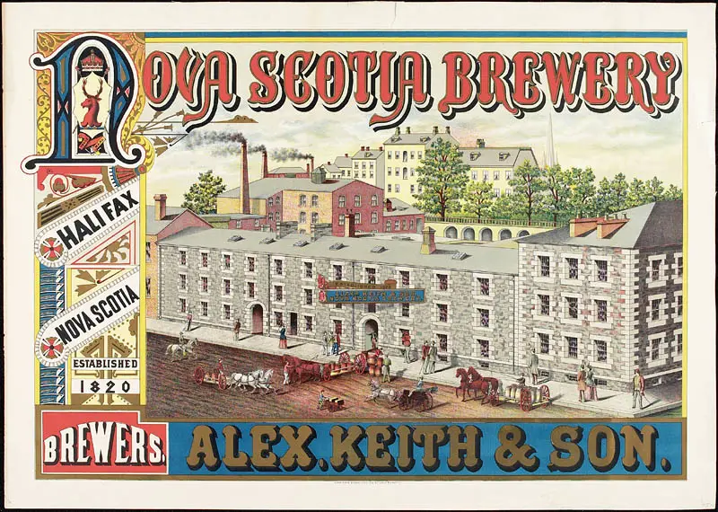
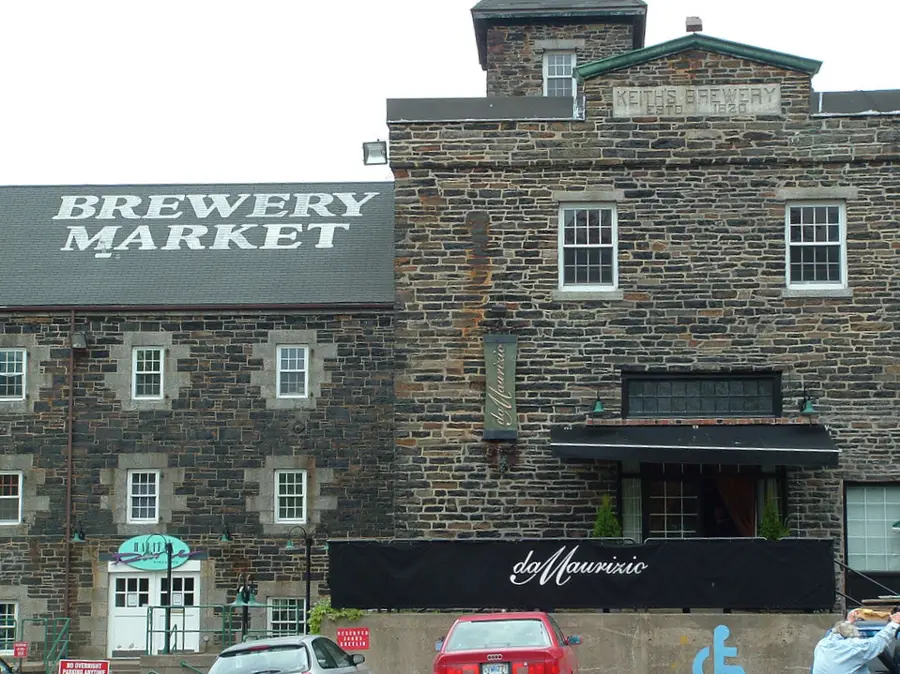

대표 로고대표 브랜드 마크
대표 로고대표 브랜드 마크Alexander Keith's Brewery
Alexander Keith's Brewery는 캐나다 노바스코샤주 핼리팩스에 있는 양조장이다. Anheuser-Busch InBev가 소유하고 있으며 Alexander Keith's IPA로 알려져 있다.
최종 업데이트
Alexander Keith's Brewery는 어떤 브랜드인가
Alexander Keith's Brewery는 캐나다 노바스코샤주 핼리팩스에 기반을 둔 양조장이자 맥주 브랜드이다. 현재 Anheuser-Busch InBev가 소유한다.
1928년 이후 모회사들이 브랜드를 이어 왔고, 1990년대에는 Alexander Keith's India Pale Ale(IPA)가 노바스코샤에서 가장 인기 있는 맥주가 되었다. 다른 스타일의 맥주도 판매한다.
처음에는 핼리팩스 양조장에서만 생산해 Maritimes 지역에서 팔았으나, 지금은 캐나다와 미국에 있는 Anheuser-Busch InBev 공장에서 생산한다. 현대의 Alexander Keith's IPA는 알코올 도수 5%의 가볍게 홉을 넣은 맥주로, 인도 페일 에일의 통상 기준에는 맞지 않는다.
Alexander Keith's Brewery는 어떻게 시작되고 성장했나
이 양조장은 1820년 Alexander Keith가 세웠으며, 그는 3년 전 스코틀랜드에서 이민해 온 인물이다. 1928년 사업은 Oland Brewery에 매각되었고, Oland Brewery는 다시 Labatt Brewing Company에 팔렸다.
이후 여러 차례의 합병과 인수를 거쳐 Labatt는 현재 Anheuser-Busch InBev의 일부가 되었다. 1928년 이후에도 모회사들이 브랜드를 유지했고, 1990년대에는 Alexander Keith's India Pale Ale(IPA)가 노바스코샤에서 가장 인기 있는 맥주가 되었다.
Alexander Keith 제품은 처음에는 핼리팩스 양조장에서만 생산되어 Maritimes 지역 판매용으로 만들어졌다.
Alexander Keith's Brewery의 브랜드 아이덴티티는 무엇인가
1820년 핼리팩스에서 Alexander Keith가 세운 양조장으로, 노바스코샤에서 가장 인기 있던 Alexander Keith's IPA로 알려진 브랜드이다.
Alexander Keith's Brewery의 대표 제품과 서비스는 무엇인가
대표 제품은 Alexander Keith's India Pale Ale(IPA)이다. 이 제품은 알코올 도수 5%에 가볍게 홉을 넣었으며, 인도 페일 에일의 통상 기준에는 맞지 않는다.
그 밖에 여러 스타일의 맥주도 판매한다. 20세기 초 양조장의 보관 레시피는 홉 사용량이 많고 옥수수를 쓰지 않은 대량의 순수 맥아 원료를 보여 주어, 현대 제품과 대비된다.
2016년 Canadian Brewing Awards에서 Alexander Keith's IPA는 IPA 부문이 아닌 "North American Style Blonde or Golden Ale" 부문에서 3위를 했다.
Alexander Keith's Brewery는 지금 어떤 상태인가
현재 Alexander Keith's는 Anheuser-Busch InBev가 소유하고 있으며, 본사는 핼리팩스에 있다. 원래 Maritimes 지역 판매용으로 핼리팩스 양조장에서만 만들던 제품이 지금은 캐나다와 미국에 있는 Anheuser-Busch InBev 공장에서 생산된다.
Alexander Keith's Brewery 로고는 어떻게 변해왔나
대표 로고대표 브랜드 마크사진으로 보는 Alexander Keith's Brewery의 역사


자주 묻는 질문
Alexander Keith's Brewery는 어느 나라 브랜드인가요?
Alexander Keith's Brewery는 캐나다의 식음료 브랜드입니다.
Alexander Keith's Brewery는 언제 설립되었나요?
Alexander Keith's Brewery는 1820년 설립되었습니다.
Alexander Keith's Brewery의 브랜드 아이덴티티는 무엇인가요?
1820년 핼리팩스에서 Alexander Keith가 세운 양조장으로, 노바스코샤에서 가장 인기 있던 Alexander Keith's IPA로 알려진 브랜드이다.
Alexander Keith's Brewery의 대표 제품은 무엇인가요?
대표 제품은 Alexander Keith's India Pale Ale(IPA)이다.
Alexander Keith's Brewery는 어느 기업이 소유하고 있나요?
현재 Alexander Keith's는 Anheuser-Busch InBev가 소유하고 있으며, 본사는 핼리팩스에 있다.
Alexander Keith's Brewery의 본사는 어디에 있나요?
Alexander Keith's Brewery의 본사는 핼리팩스에 있습니다(위키데이터 기준).
Alexander Keith's Brewery의 공식 웹사이트는 어디인가요?
Alexander Keith's Brewery의 공식 웹사이트는 https://www.keiths.ca/ 입니다.
출처와 검증
Alexander Keith's Brewery 관련 참고: 공식 웹사이트 · 위키데이터 Q1422369 · 영어 위키백과. 브랜드명은 한글과 원어를 함께 표기하되 데이터에 없는 표기는 만들지 않습니다. 기원 국가·설립연도는 검수된 정의문에서 확인된 값을 우선하고, 없을 때만 공식 웹사이트 URL이 일치하는 위키데이터 개체의 값을 씁니다. 위키데이터 값은 2026-11-08 기준입니다.